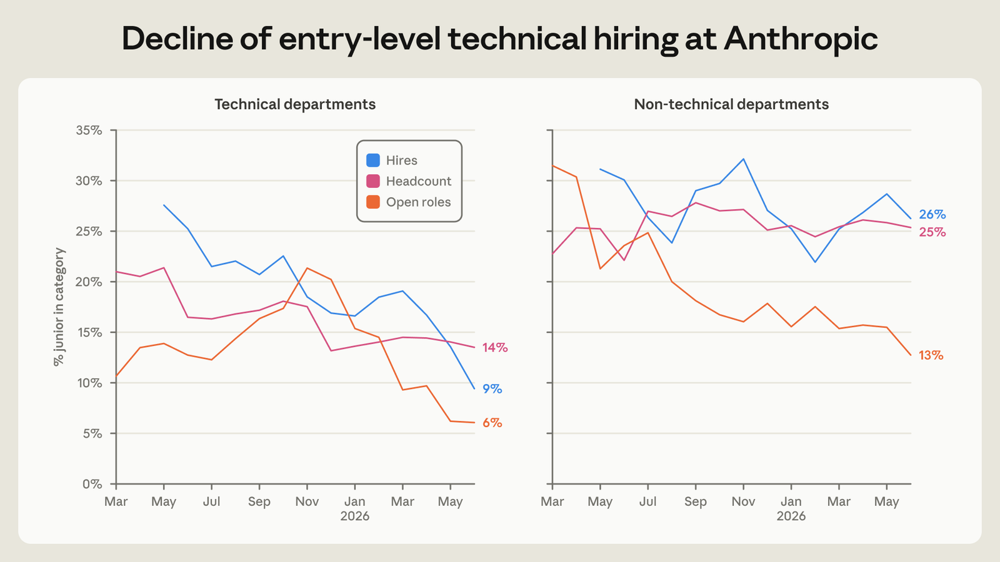
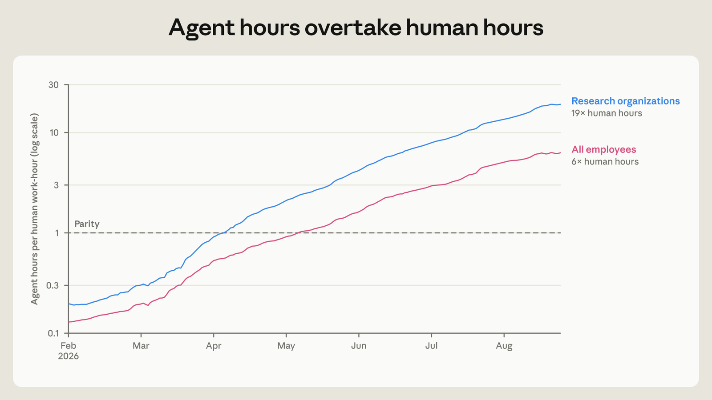
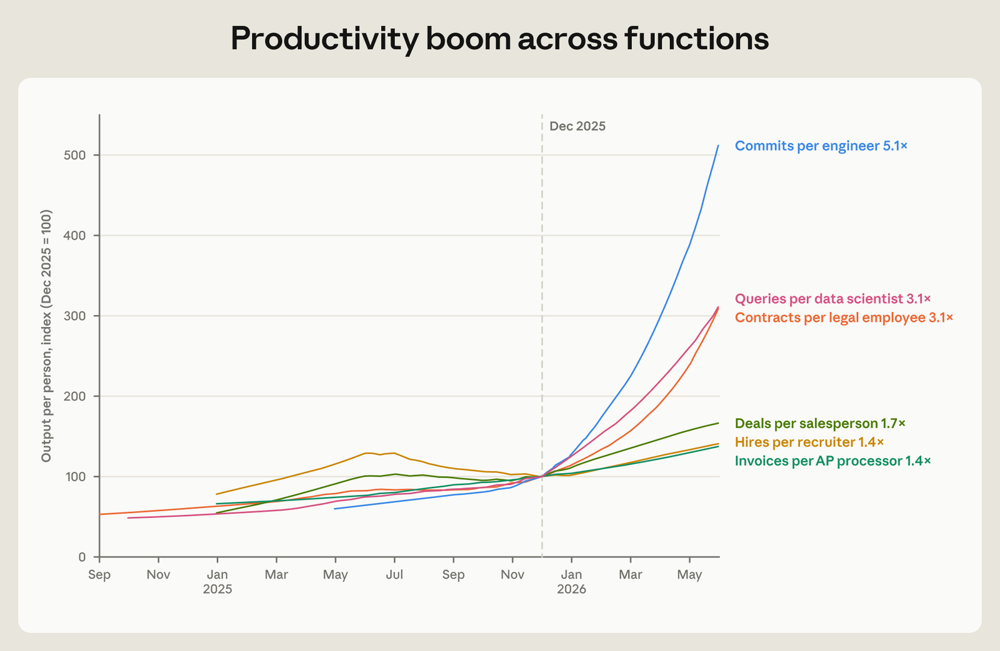
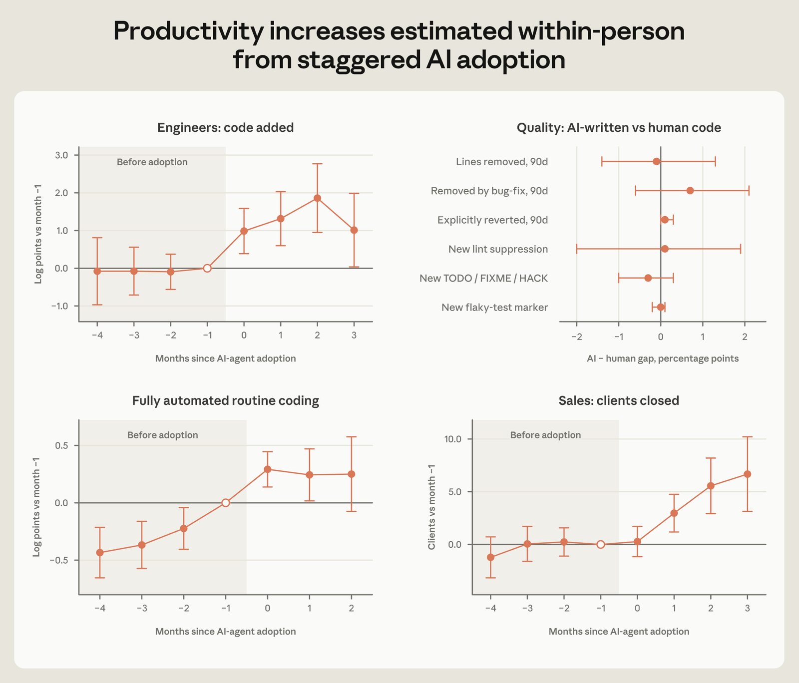
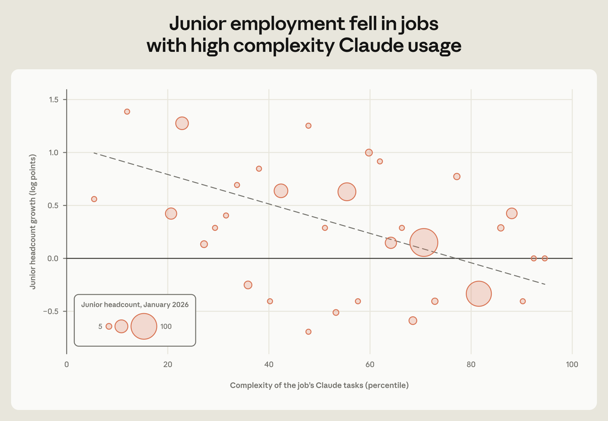
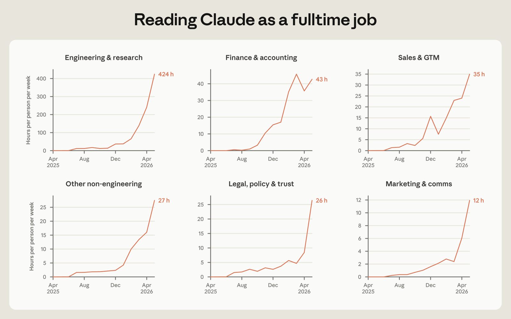
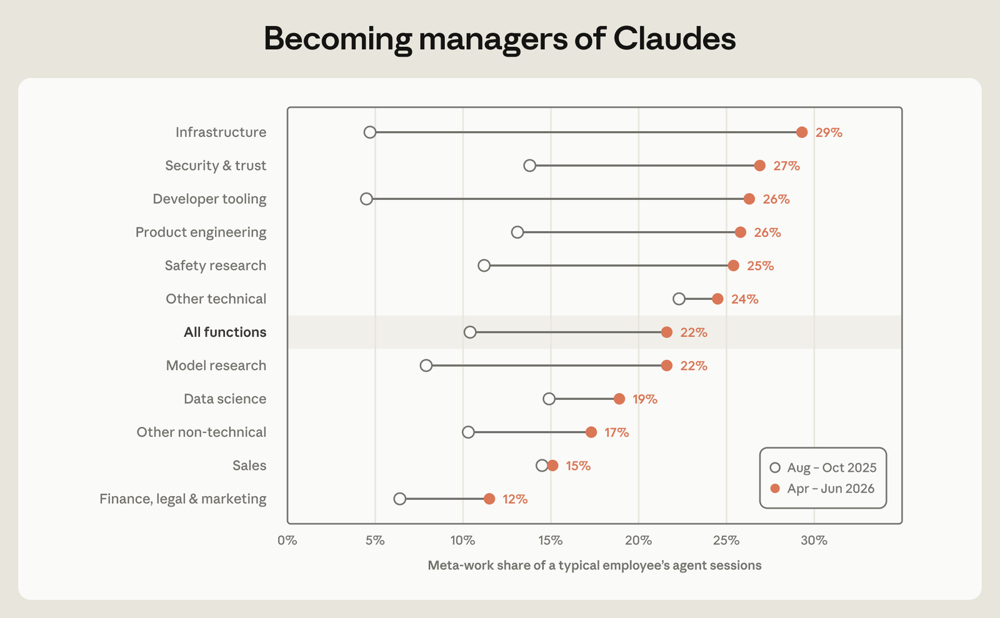

How has AI restructured work and employment at Anthropic? As a company at the frontier of AI adoption, Anthropic could be a leading indicator of how AI will shift work organization, hiring, and labor demand across the economy.
Key findings
- Anthropic has been hiring for a smaller share of junior technical positions. This occurred as hours worked by AI agents relative to employees rapidly expanded. By August interactive AI agent hours outnumbered employees’ 6 to 1.
- As AI agents diffused through the company, Anthropic began producing more code per person, closing more sales per rep, and processing more contracts. Following the same employee over time, output rose as they adopted new AI tools.
- This acceleration makes human attention the bottleneck for agent output. Even among non-technical employees, reading all the output of their Claude agents would take half their work week. In response, employees turn to “meta-work,” of building visibility tools and monitoring agent pipelines.
- Changes in work organization are reflected in shifting priorities among hiring managers, who increasingly emphasize autonomy and judgment, relative to technical domain expertise and implementation.
Introduction
What transformations of work and employment can we expect under increasingly powerful AI? Anthropic is worth studying because it has thoroughly molded its workflows around AI. Agents flit through Slack chats and schedule meetings. They autonomously fix bugs and collectively tackle huge engineering projects. Agent hours worked outnumber human hours 6 to 1. Changes happening at Anthropic now give advanced signals about a possible future of work and employment.
This report draws on comprehensive internal Anthropic data covering employment, AI use, output metrics, employee surveys, internal communication patterns, employee calendar data, and hiring decision records. It contextualizes these quantitative data with 17 employee interviews.
We find that even as the company grows, relative hiring in junior technical positions has slowed. Productivity for both engineers and non-technical employees has leapt up and did so sharply when they adopted coding agents. Hiring managers increasingly emphasize applicants’ autonomy and judgement relative to specific technical expertise. A defining feature of working in an AI-heavy organization is constant pressure to streamline oneself out of this bottleneck position when possible. One engineer described work as facing “an army of Claudes, with every one asking for my attention.” Employees at Anthropic remain critical. But the nature of their contributions has changed.
Anthropic has responded to these changes by setting up an early warning system to track jobs at risk of disruption, and as jobs evolve the company has prioritized internal redeployments. These actions, taken at the frontier of both AI development and workplace change, show how specific organizational commitments can shape the impact of AI on employment. But they also raise difficult questions about exactly what those commitments should be.
Labor demand at the frontier
Anthropic has expanded rapidly. But it has hired less per dollar of revenue than an earlier generation of large tech companies. At five years old, Anthropic takes in between 2–4 times as much revenue per employee as Meta and Google as they crested in their own rapid growth.1
What jobs are missing? Within Anthropic, discussion of a decline in demand for junior technical employees emerged in core technical functions in January 2026. The teams that relied most heavily on Claude in their own work found that writing code and finding bugs could increasingly be offloaded to Claude. Newly capable models accelerated this perception: “the thing that raised eyebrows was the uplift for performance engineers in particular and it basically overnight changed what we were looking for.”
By April, engineering and research teams had deemphasized hiring for lower band technical positions. When surveyed in the same month, a majority of managers described hiring for a different set of skills due to AI. Around a third of ML and a fifth of SWE managers reported hiring less due to AI.
The shift in employment shares is striking. Figure 1 shows that the share of junior-level employees in technical departments at Anthropic slipped from 21% to 14% since early 2025. The proportion of junior technical hires fell even faster, from 27% to 9%. Postings for juniors have fallen particularly sharply since December 2025.

At the same time, the overall employment share of technical departments within Anthropic has fallen, from 61% to 56% in the last year. As the company expands, technical hiring has continued growing in absolute terms, but intensive hiring in sales, finance, and recruiting has outpaced it. Part of this shift is the natural expansion of business functions as the company scales. Part could reflect coding tools increasingly allowing non-technical employees to make software themselves. For example, a sales representative designed a custom dashboard and pipeline tailored to their work: “a build like this was out of my wheelhouse, especially with the UI, connecting all the tools, the MCPs. But I built this probably in three to four hours, just iterating on it.” Coding-focused AI agent sessions for non-technical employees (identified as those with no code commits at baseline, excluding new hires) leapt from 2 per month in August 2025 to 90 in May 2026.
Yet this shift in hiring composition is not only a story about automated coding allowing it to diffuse to other domain experts. Within technical departments, the share of employees not actively coding (defined as those making no code commits in the prior 30 days) fell by almost half over the year through April 2026. Part of this is due to a thinning share of non-engineers: the ratio of engineers to product managers, for example, sits at around 17 to 1 and has increased since 2025. The number of commits from managers has also doubled. The supervising and coordinating roles within technical teams increasingly involve building and shipping code.
One area in which non-technical hiring has not accelerated is in the administrative functions that typically scale with a company’s size. A combination of agent assistants, automated review and ticket service outsourcing has left Anthropic clerical-light even as it has grown rapidly. A financial manager built a purchase request review agent and explained to colleagues “it's just trying to find the things that take a lot of hours so they can focus on the other stuff.”
Even clerical work tightly connected to in-person interaction has grown slowly. An executive assistant, who built a personal assistant agent for scheduling and email triage, explained: “I think we've already moved past the point of Claude augmenting away the really entry-level admin type role,” and instead focused their work on higher-order “chief of staff” tasks.
These changes have already involved reallocation: employees working at the company for at least a year were 50% more likely to move across departments each month in 2026 than they were in 2025. Whole teams have also been reallocated as they handed off their work to agents. Consider one product design team, which wrote content like the greetings on Claude.ai: “Hello night owl;” “Coffee and Claude time?” In spring 2026, the team developed a context graph that effectively guided agents to write compelling product content. This “scaled the team out,” its manager explained, but also raised the question of what was left for human writers. The team then rotated into agent prompting and began writing model evals and prompts for Claude. “Writers who used language to drive human behavior are now using it to drive Claude behavior.”
Is AI driving productivity increases at Anthropic?
Are these shifts attributable to AI? At Anthropic, humans are a thin layer atop a growing contingent of AI agents. Based on agent session telemetry, in March 2026, the sum of autonomous and interactive agent work hours leapt past human work hours for the first time. Part of this is fleets of agents conducting industrial scale software engineering, filling in myriad routine tests and checks, conducting maintenance on a growing mass of infrastructure code, and driving concerted campaigns to translate massive codebases. But even narrowing in on the agents deployed by individual employees, as in Figure 2, by August the agents worked 6 times as many hours as their human handlers.

Anthropic is a software producer, and the vast bulk of tokens flowing through these agents is spent producing software code. Dashboards monitor fleets of agents operating across the company. But personal assistant agents also monitor employee calendars and messages, scheduling, sending to-do lists accumulated from incoming messages, and automatically briefing employees on the people and purpose of their upcoming meetings. Tokens touch a growing range of everyday work tasks.

What do all of these tokens amount to? Figure 3 plots output over time for a range of job functions with measurable output. Consistent with prior reports surveying Anthropic engineers and describing automation of model training and research, code commits per engineer have risen the fastest, coming in at 5x their velocity as 6 months ago. Data scientists are also querying the growing mass of Anthropic data more, asking Claude agents to get real-time metrics to dashboards and decisionmakers. But Figure 3 shows that even non-technical employees saw output rise as coding agents diffused: lawyers processed more contracts; accounts payable ushered through invoices; salespeople closed more deals.
But is all of this due to Claude usage? During this same period, the company saw explosive business growth. It is easier to close deals when you sell a strong model. To assess the independent effect of AI, we compare the output of employees who adopt agentic coding tools to those who have not yet adopted the tools. This lets us compare employees working in the same month at the company, and therefore exposed to a similar business context, but approaching it with different tools. Note however that tool adoption is not random: if employees on the cusp of driving some big new project decide to tool up for it, for example, this would bias our estimates.
We follow 192 engineers over time as they adopt coding agents, compared to 74 engineers who do not adopt agents during the period studied. Figure 4 shows that in the months following adoption, the amount of code that engineers add rises sharply. More code does not necessarily mean better code or business impact. To test for AI code slop, we study code commits made at Anthropic. We compare code committed by the same employee, in the same month, in the same coding directory, but written by coding agents rather than written directly by the human employee. There are many dimensions of code quality, and AI errors may be harder to identify than human ones. But we find no difference in rates of lines of code subsequently removed or reverted.
Figure 4 also looks at what happens after an engineer adopts their first fully autonomous agent. Those who adopt were already on a steeply upward trajectory compared to non-adopters. This suggests that employees shifting toward fully autonomous agents were already ramping up their output.

Do these patterns go beyond coding, into a broader transformation of knowledge work? Anthropic sales representatives steadily adopted AI agents starting last September. Figure 4 shows that after sales representatives adopt agents, they close deals with more clients. Part of this pattern could be driven by representatives with more sales opportunities selecting into automation. But it could also reflect automation of logging and routine communication. One account executive explained that Claude automations handled email drafting and customer management software integrations, replacing around 20% of their prior work tasks. Another noted that similar automations freed them up to focus on face-to-face time, letting them talk to 30% more of their customers than was previously possible: “anytime you do anything a second time, you're kind of like, okay, how can I use Claude to make it so that I don't have to do it a third time?”
Beyond sales, an Anthropic lawyer built a series of Claude automations to scan risks and opportunities, triage legal questions and take first passes through public-facing copy for legal review. A recruiter used Claude to help with candidate sourcing, tracking applications and an analysis that would have taken “maybe a couple of weeks,” freeing him to redesign outdated interview questions and meet with more applicants.
All of this suggests that as AI capabilities improve, it impacts a wide range of jobs across Anthropic. Descriptively, we see junior employment slowing in jobs that use Claude for the most complex tasks (Figure 5).

Bottlenecks and process: new and old tasks in an AI-intensive workplace
Heavy AI adoption reshapes more than employment and productivity. It also drives continual changes in work processes, generating new tasks and shifting employees’ perceptions of their workplace. One employee described this as the “eternal pressure at Anthropic to move as fast as possible and use Claude for everything” and another that “things we expect in a week are things that would take three months elsewhere.” An internal employee survey asked whether work processes at Anthropic made respondents as productive as possible: 44% of employees agreed in late 2024; 58% by November 2025 (in April 2026, 75% answered yes, but the question weakened by dropping “as possible”). As of August, employees at Anthropic expected that AI will be able to do 75% of their work by 2030, compared to 28% for other Americans.
These ratcheting productivity expectations are dramatized by the cadence of internal model releases. As soon as a new model is available, Anthropic employees start tackling harder problems in interactive coding agent sessions. We measure this with an automated Claude grader rating deidentified sessions’ task demands based on depth, scope and number of systems implicated. The share of tasks above the 90th percentile of difficulty for the old model rises sharply by around 30% (from 10% to 13% of all tasks) and stays elevated in the weeks following model releases. The easy end of tasks given to agents changes little.
Spiraling agent productivity translates into output pitched across humans’ screens and attention. One engineer compared this to babysitting:
They're like, I need my juice box opened and it's an emergency that my juice box is opened. And that is voiced with the same level of concern as the one who has sliced their finger and is bleeding. [...] When you are babysitting, every child brings to you concerns with an equal demand for your attention and the various [Claudes] also do that.
In the April 2026 survey, an open-ended question about how AI has impacted day-to-day work, 27% described productivity gains from Claude tools and 20% described their role shifting from actually doing work to managing Claudes.
Amid this model-driven acceleration, human attention is a constant bottleneck. In interactive, multi-turn sessions, the vast majority of agents’ session time is not spent working at all, but spent waiting. We track idle time by subtracting each agent’s active working time from each interactive session’s total wall-clock time. Claude sessions amount to around 80% idly waiting for human input. As one engineer put it, people are “bottlenecking the agents.”
How much time exactly would be needed to read all of Claude’s output from interactive sessions? For each interactive session, we convert each session’s agent output token to word count, assuming average human reading speed. Figure 6 shows that technical functions have seen the volume of coding agent output leap up over the last 6 months. But even for non-technical groups, interactive Claude sessions are outputting enough content to take up over half of the work week. The deluge of Claude text needs organizing.

One solution to this deluge is rising automation. But this requires work of a different kind. Written standing instructions for agents grew from a few hundred in July 2025 to 8,500 a year later. One engineer set up an agent chief of staff to triage agent requests. Another wrote a performance review for their Claude team: “Hey, let’s talk about what is and is not working about our communication style.” Recruiters built integrated dashboards with agents surfacing problems and initiating actions. A lawyer shifted their attention from reviewing legal questions to doing “SEO for legal advice, you need to write frameworks that [clients’] agents discover.”
Figure 7 shows that this kind of meta-work leapt from 10% of the average employee’s interactive Claude sessions in fall 2025 to 22% in spring 2026. Much of this rise was due specifically to agent management: writing specs for multi-agent runs, looping one agent to review another’s output, and monitoring pipelines. Across functions, human involvement increasingly abstracted from a particular piece of code or writing to the tooling necessary to get agents to do their tasks effectively.

Despite increases in agent reliability and these significant investments in tooling to supervise them, human trust and accountability remains critical. One employee explained that, increasingly, chasing down bugs “uncovers these organizational or systemic or tech debt things that actually require some amount of human convening and decision-making and governance to solve.” In interview after interview, employees described face-to-face coordination as indispensable. Based on calendar data, the median employee spends 20% more time in meetings than a year ago. Part of this reflects the growth of the company, and a shift toward meeting-intensive non-technical roles. But even among employees in technical individual contributor roles, meeting time is up 16% over the past year. Big picture strategic questions touch a broad range of leveraged positions, and typically require debate and engagement with others. A break from managing the agents typically looks like jumping into a meeting.
Broadly, both technical and non-technical roles have seen implementation parts of their job automated (writing code, identifying bugs, logging progress, drafting emails). Engineers described becoming leaders and managers of agents; non-technical employees described doing more and more of the strategic parts of their job: “that 20% that was strategic becomes 90% of the job.” But for many non-technical roles, core implementation work is also interpersonal: a sales call, an interview, cross-functional alignment on a complex problem. All of this remains human.
Consider too the Slack channels that provide both the front page and backchannels of Anthropic communication. Agents diffused through Slack and eventually appeared in nearly half of active, public channels. Figure 8 zooms in on the communication network of a single large department, drawing on all public Slack channels that department members interacted through. It links both human and agent participants by whether they participated in a Slack thread. The figure shows the remarkable rise of agents, as orange dots blossom and dominate the network.
Figure 8: Agents come to the communication network. Note: Blue dots are employees; orange dots are agent threads. Ties are interaction among humans or agents in the same thread.
Agents appear disproportionately in dedicated channels for Claude-human interactions, rather than messaging a lot in incumbent human channels. The underlying structure and density of human communication changes little. Agents did not replace human interaction, but rather added to it: human threads in this department sustained the same number of human responses, while additionally layering on agent responses. Agents become teams for a single employee, rather than nodes with high connectivity to many employees at once.
As humans work amid a growing fleet of AI agents, they face pressure to shift human work into agent-visible channels. If a decision is made in an in-person meeting, and no notes or report-out appears, agents are missing crucial context for updating their goals and assumptions. An employee explained how having their name on a months-old document about Claude swag meant agents kept bringing requests for t-shirts and mugs, long after their responsibilities had changed. Private work, in unlogged meetings and direct messages, is invisible, confusing and discouraged in an AI-heavy workplace. One researcher described this default toward openness as critical to Anthropic’s thoroughgoing integration of AI: “most organizations do not run that way and I think that's a big shift because leaders have to defend feedback out in the open.” The need to feed AI context requires observability of human work and decisions.
Who will thrive in a workplace like this? Shifts in the content of work at Anthropic also show up as changes in the skills that hiring managers prioritize in hiring decisions. We used an automated coder to process hiring manager interview score cards for thousands of employees hired at Anthropic since 2024. These comments are qualitative reactions by interviewers assessing candidates’ performance. The clearest change is increased emphasis on whether candidates have demonstrated creative use of AI tools. In 2024, hiring managers noted candidates' track record on AI tooling in around 5% of assessments for technical roles, and 7% for non-technical roles. By 2026, these rates had tripled for technical roles and quadrupled for non-technical roles. Hiring managers increasingly focus on whether candidates effectively use AI.
Deeper changes in assessment are also visible. Among interviews for technical candidates, the single biggest increases were in comments on applicants’ autonomy and judgment. Discussion of domain expertise shrank as a share of overall assessment. As one manager explained, “I expect models to continue to be jagged, so for my team I want them to be fungible across domains.” Similarly, for non-technical candidates, customer and mission orientation increased, while discussion of execution skills fell. Increasingly, hiring managers assess applicants based on their judgment and commitment, rather than the domain-specific skills and execution automated by AI tools.
What employers can do
The deep adoption of AI at Anthropic makes it a useful case. As AI diffuses and improves, the organization of work could shift as it has in prior waves of technological change. The railroads gave us the managerial corporation, steam power allowed factories, and personal computers delivered the startup. What new organizations will tool-using, reasoning LLMs require, and what will be our role in them? One possibility is single-person start-ups, each with a human founder steering swarms of agents to rake in billions in revenue. Another is companies built by AI genius CEOs employing human agents only to wield pipettes and testify before congress.
Anthropic does not look like either of these. It has tripled in size in the last year. It is no longer a small startup. It has also not ceded executive control to its models. Written Slack debates and in-person meetings steer everything from company strategy to team decisions, with little input from AI agents. Keeping human work visible across the company ensures autonomous agents reason from fresh context. Individual contributors orchestrating teams of agents look more like managers in terms of the knowledge they need and the interdependencies in their work. Working and deciding in the open is critical at an AI-intensive organization.
As employees increasingly see their work as managing teams of Claudes, they spend more time building the tools needed to do this effectively in their own distinctive domains. This experimentation means that employees are continually automating their own tasks away. In some roles, they are increasingly removed from the object-level work that originally built their skills. As agents sprint through workflows, human attention and judgment are a bottleneck that the system strains against. From sales to legal, human employees are expected to do more and different tasks. Roles broaden to include building products, managing agents and tackling the strategic and interpersonal work that remain beyond the scope of the best LLMs.
These changes in the organization and content of work have appeared alongside declining shares of junior technical roles in headcount, hiring, and posting. Hiring managers increasingly focus on applicants’ autonomy and judgment, rather than execution and narrow expertise. Overall, Anthropic’s revenue growth relative to its employment growth has sped past even the rapid early productivity growth of a prior generation of technology companies.
Reading these patterns forward and out across the economy suggests that AI diffusion could risk worker displacement. Prior work also finds that AI-native start-ups and AI-adopters are flatter and employ fewer entry-level employees.. What can we learn from Anthropic about how to manage AI upheavals in a way that serves the humans working around them?
Here we want to proceed carefully. There are many parts of Anthropic’s employment practices that cannot be replicated across the economy.
But three features stand out. First, widespread stock ownership gives employees a strong interest in the company’s success. Of course, this is an easy posture for a company that has seen substantial increases in valuation. For many firms, shared ownership may be insufficient or otherwise undesirable. But it is difficult to imagine a version of pro-worker AI adoption in which workers do not hold a financial stake in successful rollout. If individual contributors are expected to “manage agents,” “make VP level decisions” and be “their own business line,” as interviewees put it, then aligning their interests with the organization is crucial. The post-World War II union-management settlement forged in the 1950s rested on exactly this kind of bargain: labor unions like the United Auto Workers and the United Steel Workers allowed management prerogative over work reorganization (and even intensification) in return for pay increases tied to productivity increases and to a rich array of benefits. Whatever the new deal between AI-affected employees and their employers, a mechanism to share benefits of adoption is essential. At Anthropic, workers codify their expertise for the machine, see their work routines constantly roiled and disrupted, and have seen a large part of their job become speedreading the output of their AI collaborators. They do not do this for free.
Second, Anthropic is standing up an ongoing early warning system to monitor jobs facing AI-driven transformation. A series of role-level metrics for demand and productivity are read against AI capabilities and use. These aggregate metrics help flag where work is shifting. An early warning system allows the company to start reallocating affected employees to jobs with a skills fit that may be less immediately at risk. As companies across the economy reorient to an accelerated pace of work reorganization, effective systems for guiding internal employee reallocation will become increasingly valuable. Turning to the external labor market to meet every new task demanded by AI advances will be a stronger bottleneck the faster AI advances. In this report, we found increased mobility between departments, changing work content, and employees shifting to new tasks as old ones were automated. Building systems to flexibly reallocate workers internally will be critical for AI-intensive organizations.
This commitment to internal worker reallocation raises important tradeoffs. A well-functioning labor market should shift workers into their most productive positions, whether that is at their current employer or another one. Commitments to reallocate incumbent workers could make employers hesitant to take a risk on hiring new employees. In normal economic conditions, particularly intensely competitive ones, such commitments could be costly.
But prioritizing reallocation forces AI-adopting companies to consider ways that AI can create new tasks for new products and new markets, rather than funneling AI applications into replacing human workers to save on labor costs. This could help employers resist the temptation of ‘so-so’ or ‘inefficient’ automation in which AI or other technologies just barely outcompete human workers: employers replace human workers, imposing substantial social costs in lost income for displaced workers, while delivering minimal productivity benefits.
From what we see in Anthropic, both novel and persistently human tasks remain alongside intensive AI use. Uncertainty about the future set of these tasks should recommend preserving a flexible workforce. As one Anthropic executive noted, “a workforce that is anxiously worried is not a workforce doing its best work.”
None of these actions will prevent powerful AI from disrupting jobs. And indeed none directly address the slowdown in junior hires documented in this report. Employment protections for incumbents will not benefit those not hired to begin with. Private action on the part of employers must come alongside farsighted government policy around retraining and income support. Such policy should be guided by a clear picture of the scale of workplace transformation that AI can bring.
Suggested citation
@techreport{wilmers2026employment,
author = {Nathan Wilmers and Regina Catipon and Maxim Massenkoff and Peter McCrory},
title = {How employment is changing at Anthropic},
institution = {The Anthropic Institute},
type = {Technical Report},
year = {2026},
month = oct,
url = {https://www.anthropic.com/research/employment-at-anthropic}
}Acknowledgements
We are grateful to the Anthropic employees who gave time for interviews about how their work has changed. For very helpful comments and assistance, we thank Kate Astbury, Shehzad Bashir, Zoe Blumenfeld, Scott Booth, Henry Brill, Yena Cho, Henry de Valence, Adam Farina, Johannes Hermle, Zoe Hitzig, , Hasnain Lakhani, Eva Lyubich, Kerry Persen, Kristina Pham, Sarah Pollack, Hannah Pritchett, Georg Rilinger, Santi Ruiz, Szymon Sacher, Florian Scholz, Meg Tong, Monika Tuchowska, Helen Wang, Kim Withee, Charles Yang, and Jack Clark.
Works cited
Acemoglu, Daron, and Pascual Restrepo. 2019. “Automation and New Tasks: How Technology Displaces and Reinstates Labor.” Journal of Economic Perspectives 33 (2): 3–30. https://doi.org/10.1257/jep.33.2.3
Beraja, Martin, and Nathan Zorzi. 2025. “Inefficient Automation.” Review of Economic Studies 92 (1): 69–96. https://academic.oup.com/restud/article-abstract/92/1/69/7612958
Demirer, Mert, Leon Musolff, and Liyuan Yang. 2026. “Writing Code vs. Shipping Code: Productivity Effects Across Generations of AI Coding Tools.” NBER Working Paper 35275. https://doi.org/10.3386/w35275
Ewens, Michael, and Xavier Giroud. 2025. “Corporate Hierarchy.” NBER Working Paper 34162. https://doi.org/10.3386/w34162
Favaro, Marina, and Jack Clark. 2026. “When AI Builds Itself.” The Anthropic Institute. https://www.anthropic.com/institute/recursive-self-improvement
Hitzig, Zoe, Maxim Massenkoff, Eva Lyubich, Shaoyi Zhang, Ryan Heller, and Peter McCrory. 2026. “Agentic Coding and Persistent Returns to Expertise.” Anthropic, June 16. https://www.anthropic.com/research/claude-code-expertise
Hosseini Maasoum, Seyed Mahdi, and Guy Lichtinger. 2025. “Generative AI as Seniority-Biased Technological Change: Evidence from U.S. Résumé and Job Posting Data.” SSRN Working Paper 5425555. https://papers.ssrn.com/sol3/papers.cfm?abstract_id=5425555
Huang, Saffron, Bryan Seethor, Esin Durmus, Kunal Handa, Miles McCain, Michael Stern, and Deep Ganguli. 2025. “How AI Is Transforming Work at Anthropic.” Anthropic, December 2. https://www.anthropic.com/research/how-ai-is-transforming-work-at-anthropic
Kim, Hyunjin, and Rembrand Koning. 2026. “AI-Native Firms.” Harvard Business School Working Paper 26-090. https://www.hbs.edu/ris/Publication%20Files/26-090_96f92aa0-37d9-4789-beaa-5c0cb87a4032.pdf
Roodman, David, and Maxim Massenkoff. 2026. “An Evidence Review of Subsidized Job Training.” The Anthropic Institute Working Paper 2026-01. https://www.anthropic.com/research/reviewing-the-evidence-on-worker-retraining-programs